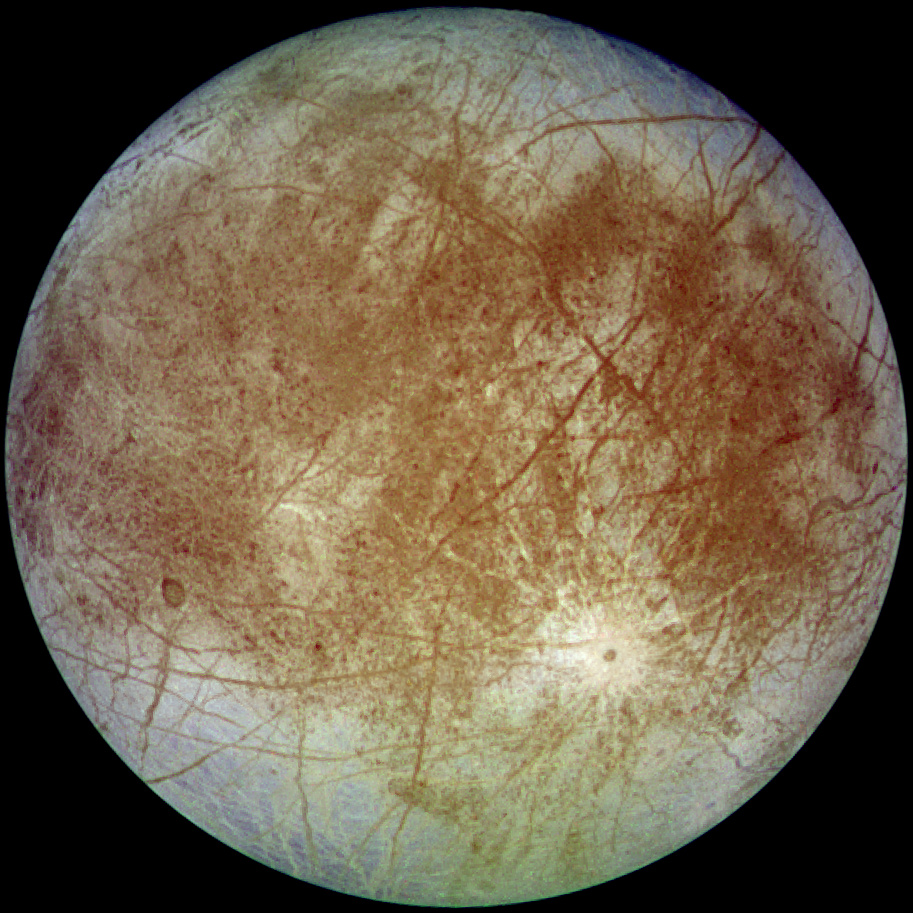

Europa
Europa is the sixth-closest moon of the planet Jupiter, and the smallest of its four Galilean satellites, but still the sixth-largest moon in the Solar System.
- Diameter (km)
- 3,100km
- Mass (kg)
- (4.799844±0.000013)×1022 kg
- Orbital Period
- 3.551181 d

Callisto
Callisto is a moon of the planet Jupiter. It was discovered in 1610 by Galileo Galilei. It is the third-largest moon in the Solar System and the second largest in the Jovian system, after Ganymede.
- Diameter (km)
- 69911±6 km
- Mass (kg)
- (1.075938±0.000137)×1023 kg
- Orbital Period
- 24.79 m/s2